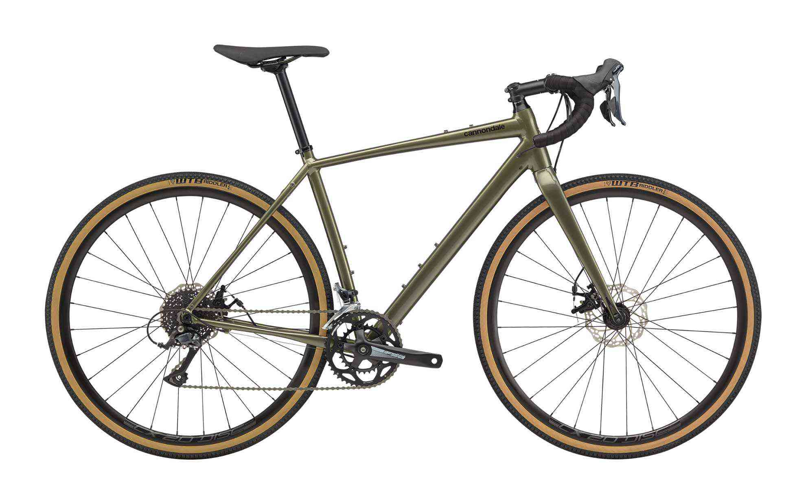

<!DOCTYPE html>
<html lang="ja">

<head><script src="/livereload.js?mindelay=10&amp;v=2&amp;port=1313&amp;path=livereload" data-no-instant defer></script>
  
  <script async src="https://www.googletagmanager.com/gtag/js?id=G-XJQRJCYY0W"></script>
  <script>
    window.dataLayer = window.dataLayer || [];
    function gtag() { dataLayer.push(arguments); }
    gtag('js', new Date());

    gtag('config', 'G-XJQRJCYY0W');
  </script>
  <meta charset="UTF-8">
  <title>TopstoneはSlateの後継者か｜イロハカの自転車日記</title>
  <link rel="alternate" type="application/rss&#43;xml" href="http://localhost:1313/20200531_Topstone/index.xml">
  
  <meta name="description" content="キャノンデールのTopstoneにレフティバージョンが登場しました。">
  
  <meta name="keywords" content="[キャノンデール]">
  <meta name="robots" content="max-snippet:50, max-image-preview:large">
  <meta name="viewport" content="width=device-width,initial-scale=1">
  <meta property="og:title" content="TopstoneはSlateの後継者か" />
<meta property="og:description" content="キャノンデールのTopstoneにレフティバージョンが登場しました。" />
<meta property="og:type" content="article" />
<meta property="og:url" content="http://localhost:1313/20200531_Topstone/" />
<meta property="og:image" content="http://localhost:1313/20200531_Topstone/images/featured.jpg" /><meta property="article:published_time" content="2020-05-31T19:25:00+09:00" />
<meta property="article:modified_time" content="2020-05-31T19:25:00+09:00" />

  
<meta name="twitter:card" content="summary_large_image"/>
<meta name="twitter:image" content="http://localhost:1313/20200531_Topstone/images/featured.jpg"/>

<meta name="twitter:title" content="TopstoneはSlateの後継者か"/>
<meta name="twitter:description" content="キャノンデールのTopstoneにレフティバージョンが登場しました。"/>

  
  <meta itemprop="name" content="TopstoneはSlateの後継者か">
  <meta itemprop="description" content="キャノンデールのTopstoneにレフティバージョンが登場しました。">
  <meta itemprop="datePublished" content="2020-05-31T19:25:00+09:00">
  <meta itemprop="dateModified" content="2020-05-31T19:25:00+09:00">
  <meta itemprop="wordCount" content="679">
  <meta itemprop="image" content="http://localhost:1313/20200531_Topstone/images/featured.jpg">
  <meta itemprop="keywords" content="キャノンデール">
  
  <link rel="stylesheet" href="http://localhost:1313/css/reseter.min.css">

  
  <link rel="stylesheet" href="http://localhost:1313/css/style.min.css">

  
  <link rel="stylesheet" href="http://localhost:1313/css/drawer.min.css">
  <link rel="icon" href="/favicon.ico" />
  <link rel="apple-touch-icon" sizes="180x180" href="/apple-touch-icon.png">
  <link rel="icon" type="image/png" href="android-touch-icon.png" sizes="192x192">
  <link rel="canonical" href="http://localhost:1313/20200531_Topstone/">
</head>

<body>
  <header>
    <div class="header_left">
      <input type="checkbox" id="menu-toggle" class="menu-checkbox">
      <label for="menu-toggle" class="menu-button"><span></span></label>
      <div class="drawer-menu">
        <ul>
          <li><a href="http://localhost:1313/">TOPページ</a></li>
          <li><a href="http://localhost:1313/about/">about</a></li>
          <li><a href="http://localhost:1313/tags/自転車のはなし/">自転車のはなし</a></li>
          <li><a href="http://localhost:1313/tags/旅行/">旅行のはなし</a></li>
          <li><a href="http://localhost:1313/privacy_policy/">privacy_policy</a></li>
        </ul>
      </div>
    </div>
    <div class="header_center">
      <p><a href="http://localhost:1313/"></a></p>
    </div>
    <div class="header_right"></div>
  </header>
  <main><div id="content">
  <section class="blog-content">
    <div class="title_line">
      <h1>TopstoneはSlateの後継者か</h1>
      <p class="date"> 2020年05月31日 </p>
    </div>
    <div class="tag_line">
      
      <p>タグ：</p>
      <ul id="tag_pickup"><li class="tags"><a href="/tags/%E3%82%AD%E3%83%A3%E3%83%8E%E3%83%B3%E3%83%87%E3%83%BC%E3%83%AB">キャノンデール</a></ul>
      
    </div>
    
  
    <figure class="featured_img">
      </img>
    </figure>
    
  
    <figure class="socialshare">
      
      <div class="a2a_kit a2a_kit_size_32 a2a_default_style">
        <a class="a2a_dd" href="https://www.addtoany.com/share"></a>
        <a class="a2a_button_twitter"></a>
        <a class="a2a_button_facebook"></a>
        <a class="a2a_button_hatena"></a>
        <a class="a2a_button_line"></a>
      </div>
      <script async src="https://static.addtoany.com/menu/page.js"></script>
      
    </figure>
    <article>
      <p>キャノンデールのTopstoneにレフティバージョンが登場しました。</p>
<h3 id="キャノンデールにおけるグラベルバイクの集大成かも">キャノンデールにおけるグラベルバイクの集大成かも</h3>
<p>数年前に登場したキャノンデールのSlateが記憶に新しいところですが、サスが高かったのかわからないものの、お値段がちょっと手が届きにくい気がしていました。<br>
その後同社のグラベルバイクはTopstoneに変わりました。　が、ここで従来のTopstoneにあったリアのキングピンに650bホイールという要素に、キャノンデールが従来から持ち続けてきたLefty Oliverフォークの持つ強烈な個性が追加されて再登場してきた感じがします。<br>
　<br>
<figure>
  
<figcaption><h4>Topstone SORA 115,000円</h4></figcaption>

</figure><br>
　<br>
Topstoneでもアルミフレームでサス無しだと115,000円とお値打ちです。ただ、キングピン搭載モデルやレフティー搭載モデルになるにしたがってお値段は上がっていきます。<br>
105とキングピン搭載のアルミモデルは275,000円。そしてレフティーも搭載のカーボンモデルは380,000円。<br>
　<br>
<figure>
  
<figcaption><h4>Topstone 105 275,000円</h4></figcaption>

</figure><br>
　<br>
いやーここまできたらレフティーを買うべきでしょう！強く推す理由がまったくないのですが強そうだし・・・。だってサスペンションがあったら下る時に楽ですからね。MTBでいいじゃないかというのは置いておいて。
　<br>
ここで僕はいつも考えてしまうんです。<br>
そもそもグラベルロードにサスペンションは必要なのか。どの程度の路面を走るためにサスペンションが必要なのか・・・。日本にグラベルロードというのは存在するのか・・・。河川敷や田んぼの砂利道はグラベルですか・・・。生命とは・・・。宇宙とは・・・。<br>
　<br>
　<br>
<figure>
  
<figcaption><h4>Slate</h4></figcaption>

</figure><br>
　<br>
　<br>
<a href="https://www.cannondale.com/ja-jp/bikes/road/gravel#sort=%40consumername1%20ascending" target="_blank">Gravel Bikes | cannondale bikes</a>
</p>
    </article>
    <article class="contentfooter">
      


    </article>
    <article class="contentfooter">
      <div class="prevnextlink">

  <div class="nextlink">
    <a href="http://localhost:1313/20200712_beforeitrains/">◀︎◀︎&thinsp;「雨が降るまえに」を読む</a>
  </div>


    <div class="prevlink">
      <a href="http://localhost:1313/20200510_TacxRearDerailleur/"></i>「Tacxからカリカリ音がする…」を読む &thinsp;▶︎▶︎</a>
    </div>
  
</div>
    </article>
  </section>
  <div id="disqus_thread"></div>
<script>
    window.disqus_config = function () {
    
    
    
    };
    (function() {
        if (["localhost", "127.0.0.1"].indexOf(window.location.hostname) != -1) {
            document.getElementById('disqus_thread').innerHTML = 'Disqus comments not available by default when the website is previewed locally.';
            return;
        }
        var d = document, s = d.createElement('script'); s.async = true;
        s.src = '//' + "irohaka" + '.disqus.com/embed.js';
        s.setAttribute('data-timestamp', +new Date());
        (d.head || d.body).appendChild(s);
    })();
</script>
<noscript>Please enable JavaScript to view the <a href="https://disqus.com/?ref_noscript">comments powered by Disqus.</a></noscript>
<a href="https://disqus.com" class="dsq-brlink">comments powered by <span class="logo-disqus">Disqus</span></a>
  
        </div></main>
<div class="to-top">
     <div id="page_top"><a href="#"><svg xmlns="http://www.w3.org/2000/svg" width="24" height="24" viewBox="0 0 24 24" style="fill: rgba(255, 255, 255, 1);transform: ;msFilter:;"><path d="M11 8.414V18h2V8.414l4.293 4.293 1.414-1.414L12 4.586l-6.707 6.707 1.414 1.414z"></path></svg></a></div>
 </div>
<footer>
<div class="footer-contents">
    <p>COPYRIGHT &#169; irohaka's blog ALL RIGHTS RESERVED.</p>
    <p><a href="http://localhost:1313/privacy_policy/">Privacy Policy</a> </p>
</div>
</footer><script id="dsq-count-scr" src="//irohaka.disqus.com/count.js" async></script>
    </body>
    
</html>
